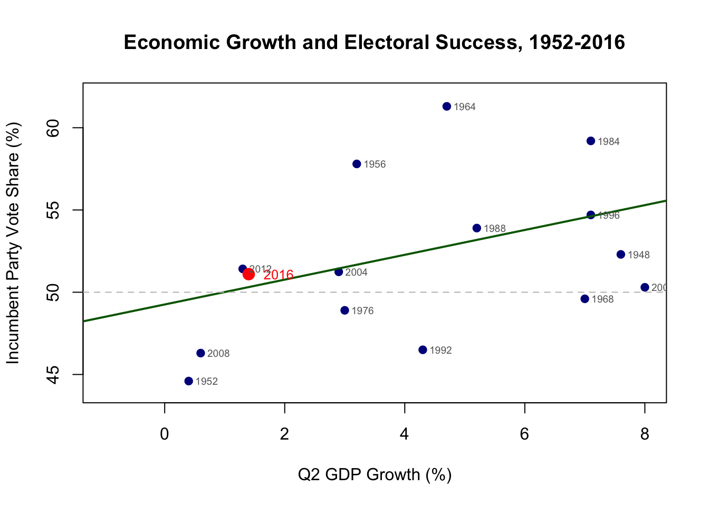

25 Assessing Model Fit
25.1 Overview: When Predictions Go Wrong
In November 2016, political forecasters faced widespread criticism for “getting it wrong” about the presidential election. Headlines proclaimed the failure of statistics, the death of polling, and the impossibility of prediction.
But if we step back from the media narrative and examine the actual predictions through the lens of statistical modeling, we find something interesting. The basic prediction models for predicting presidential elections created by political scientists actually did quite well. The question is not whether they predicted the exact outcome, but whether the actual result fell within the range of reasonable expectations given model uncertainty.
Today we tackle a fundamental question in statistical analysis: How do we know when our models are doing well? We have learned to fit regression models, interpret coefficients, and test hypotheses about individual predictors. But we have not yet addressed the bigger picture of overall model assessment. A model might have statistically significant predictors and still explain very little variation in the outcome. Conversely, a model might explain substantial variation but still miss important patterns in the data.
This module introduces the tools data scientists use to evaluate model performance. We begin with residuals, the individual prediction errors that form the foundation of model assessment. From there, we build up to R-squared, the most commonly reported measure of model fit. We then explore the F-test, which tells us whether our model as a whole performs better than simply predicting the mean for everyone. Finally, we address a practical challenge that arises frequently in political science: testing whether categorical variables like party identification improve our models, even when some categories appear non-significant individually.
25.2 The 2016 Election in Context
Let us begin by examining the 2016 election through the lens of economic voting models . Political scientists have long known that economic performance strongly predicts electoral outcomes. When the economy is growing, incumbent parties tend to win. When it is shrinking, they tend to lose. This relationship has held remarkably well across many decades of American elections.
25.2.1 Loading and Preparing the Data
We will use data compiled by political scientist Alan Abramowitz, who has developed economic voting models for decades. The dataset includes presidential elections from 1952 through 2012, with variables measuring economic growth, presidential approval, and incumbent party vote share. We will add 2016 ourselves to see how well it fits the historical pattern.
# Load the data
# Note: You'll need to adjust the path to where your data is stored
Abram <- read_dta("gdpvote.dta")
# Add June approval ratings (net approval: approve minus disapprove)
Abram$JuneApp <- c(-8, -26, 50, 30, 59, -7, 23, 5, -27, 19,
16, -17, 10, 18, -1, -30, 2)
# Add incumbent party indicator
Abram$Inc <- c(0, 0, 1, 0, 1, 0, 1, 0, 1, 1, 0, 0, 1, 0, 1, 0, 1)
# Add 2016 data
# Hillary Clinton (Democrat) was not the incumbent president but represented
# the incumbent party. She received 48.2% of the two-party vote
# Q2 GDP growth was 1.4%, Obama's net approval was about 6%
Abram <- rbind(Abram, c(year=2016, q2gdp=1.4, vote=51.1,
term=0, JuneApp=6, Inc=0))
# View the data structure
head(Abram)## # A tibble: 6 × 6
## year q2gdp vote term JuneApp Inc
## <dbl> <dbl> <dbl> <dbl> <dbl> <dbl>
## 1 1948 7.60 52.3 1 -8 0
## 2 1952 0.400 44.6 1 -26 0
## 3 1956 3.20 57.8 0 50 1
## 4 1960 -1.90 49.9 1 30 0
## 5 1964 4.70 61.3 0 59 1
## 6 1968 7 49.6 1 -7 0## [1] 18 6Now we have 18 elections worth of data, from 1952 through 2016. The key variables are:
vote: The incumbent party’s share of the two-party voteq2gdp: Real GDP growth in the second quarter of the election yearJuneApp: The incumbent president’s net approval rating in JuneInc: Whether the incumbent president is running (1) or not (0)
25.2.2 The Simple Economic Model
Let us start with a basic model using only economic growth to predict incumbent party vote share. This follows a long tradition in political science of using “fundamentals” to predict elections while ignoring polls, campaign events, and media coverage.
# Fit model using data through 2012
model_simple <- lm(vote ~ q2gdp, data = Abram[1:17,])
summary(model_simple)##
## Call:
## lm(formula = vote ~ q2gdp, data = Abram[1:17, ])
##
## Residuals:
## Min 1Q Median 3Q Max
## -6.002 -3.409 0.084 2.078 8.496
##
## Coefficients:
## Estimate Std. Error t value Pr(>|t|)
## (Intercept) 49.2560 1.4411 34.179 1.21e-15 ***
## q2gdp 0.7549 0.2578 2.928 0.0104 *
## ---
## Signif. codes: 0 '***' 0.001 '**' 0.01 '*' 0.05 '.' 0.1 ' ' 1
##
## Residual standard error: 4.481 on 15 degrees of freedom
## Multiple R-squared: 0.3637, Adjusted R-squared: 0.3213
## F-statistic: 8.573 on 1 and 15 DF, p-value: 0.01039# Generate prediction for 2016
pred_2016_simple <- predict(model_simple, newdata = Abram[18,])
actual_2016 <- Abram$vote[18]
cat("2016 Prediction from simple model:", round(pred_2016_simple, 1), "%\n")## 2016 Prediction from simple model: 50.3 %So we can see that the prediction from this model was %50.3 for Clinton—a narrow victory. In reality, she won 51.1% of the two-party vote (remember, Clinton actually won the popular vote). That means that a model based on just one variable was only off by 0.8%. An error of less than 1 percentage points is actually quite good by historical standards, especially given the simplicity of using only one predictor.
Let us visualize this model to see where 2016 fits in historical context:
# Create the plot
plot(Abram$q2gdp, Abram$vote,
xlab = "Q2 GDP Growth (%)",
ylab = "Incumbent Party Vote Share (%)",
main = "Economic Growth and Electoral Success, 1952-2016",
pch = 19, col = "darkblue",
xlim = c(-1, 8), ylim = c(44, 62))
# Add the regression line
abline(model_simple, col = "darkgreen", lwd = 2)
# Highlight 2016 in red
points(Abram$q2gdp[18], Abram$vote[18],
pch = 19, col = "red", cex = 1.5)
text(Abram$q2gdp[18] + 0.5, Abram$vote[18],
"2016", col = "red", cex = 0.8)
# Add year labels for other elections
text(Abram$q2gdp[1:17] + 0.3, Abram$vote[1:17],
Abram$year[1:17], cex = 0.6, col = "gray40")
# Add horizontal line at 50%
abline(h = 50, lty = 2, col = "gray")
The 2016 election (shown in red) sits very close to the regression line. It was not an outlier from the perspective of economic fundamentals. The incumbent party’s performance was about what we would expect given the modest economic growth of 1.4%.
25.2.3 Adding Presidential Approval
Political scientists know that economic growth is not the only fundamental that matters. Presidential approval ratings also strongly predict electoral outcomes. Popular presidents can often transfer their popularity to their party’s nominee, while unpopular presidents become anchors dragging down their party.
Let us examine how June approval ratings relate to November vote shares:
# Plot approval vs vote share
plot(Abram$JuneApp, Abram$vote,
xlab = "June Net Approval (%)",
ylab = "Incumbent Party Vote Share (%)",
main = "Presidential Approval and Electoral Success",
pch = 19, col = "darkblue",
xlim = c(-35, 65), ylim = c(44, 62))
# Add regression line
approval_model <- lm(vote ~ JuneApp, data = Abram)
abline(approval_model, col = "darkgreen", lwd = 2)
# Highlight 2016
points(Abram$JuneApp[18], Abram$vote[18],
pch = 19, col = "red", cex = 1.5)
text(Abram$JuneApp[18] + 3, Abram$vote[18],
"2016", col = "red", cex = 0.8)
# Add year labels
text(Abram$JuneApp[1:17] + 3, Abram$vote[1:17],
Abram$year[1:17], cex = 0.6, col = "gray40")
# Add 50% line
abline(h = 50, lty = 2, col = "gray")
Presidential approval also predicts incumbent party performance quite well. Obama’s modest positive approval rating in June 2016 suggested his party would receive close to 51% of the vote, which is indeed what happened.
Now let us combine both predictors in a multiple regression model:
# Fit model with both predictors using data through 2012
model_multiple <- lm(vote ~ q2gdp + JuneApp, data = Abram[1:17,])
summary(model_multiple)##
## Call:
## lm(formula = vote ~ q2gdp + JuneApp, data = Abram[1:17, ])
##
## Residuals:
## Min 1Q Median 3Q Max
## -5.3125 -1.8805 0.6694 1.1228 4.6448
##
## Coefficients:
## Estimate Std. Error t value Pr(>|t|)
## (Intercept) 49.37811 0.87653 56.333 < 2e-16 ***
## q2gdp 0.44771 0.16771 2.670 0.018313 *
## JuneApp 0.14737 0.02859 5.155 0.000146 ***
## ---
## Signif. codes: 0 '***' 0.001 '**' 0.01 '*' 0.05 '.' 0.1 ' ' 1
##
## Residual standard error: 2.725 on 14 degrees of freedom
## Multiple R-squared: 0.7805, Adjusted R-squared: 0.7491
## F-statistic: 24.88 on 2 and 14 DF, p-value: 2.459e-05# Prediction for 2016
pred_2016_multiple <- predict(model_multiple, newdata = Abram[18,])
cat("2016 Prediction from multiple model:", round(pred_2016_multiple, 1), "%\n")## 2016 Prediction from multiple model: 50.9 %The multiple regression model, using both economic growth and presidential approval, predicted the Democrats would receive 50.9% of the vote. The actual result was 51.1%. Again, this is remarkably close—-an error of just 0.2 percentage point.
25.3 Understanding Model Fit Through Residuals
We have seen that our models make reasonably accurate predictions, at least for 2016. But how can we systematically evaluate model performance across all elections? This is where residuals become essential. A residual is simply the difference between what actually happened and what our model predicted. In mathematical notation, for observation \(i\):
\[e_i = Y_i - \hat{Y}_i\]
Where \(Y_i\) is the actual outcome and \(\hat{Y}_i\) is our model’s prediction. Positive residuals mean our model under-predicted (the actual value was higher than predicted), while negative residuals mean our model over-predicted.
25.3.1 Extracting and Examining Residuals
Let us calculate residuals for our multiple regression model and examine them systematically:
# Refit model with all data including 2016
model_full <- lm(vote ~ q2gdp + JuneApp, data = Abram)
# Extract residuals
Abram$residuals <- residuals(model_full)
Abram$predicted <- fitted(model_full)
# Look at residuals for each election
residual_table <- Abram[, c("year", "vote", "predicted", "residuals")]
residual_table$predicted <- round(residual_table$predicted, 1)
residual_table$residuals <- round(residual_table$residuals, 1)
print(residual_table)## # A tibble: 18 × 4
## year vote predicted residuals
## <dbl> <dbl> <dbl> <dbl>
## 1 1948 52.3 51.6 0.7
## 2 1952 44.6 45.7 -1.1
## 3 1956 57.8 58.2 -0.4
## 4 1960 49.9 53 -3.1
## 5 1964 61.3 60.2 1.1
## 6 1968 49.6 51.5 -1.9
## 7 1972 61.8 57.2 4.6
## 8 1976 48.9 51.5 -2.6
## 9 1980 44.7 41.9 2.8
## 10 1984 59.2 55.4 3.8
## 11 1988 53.9 54.1 -0.2
## 12 1992 46.5 48.8 -2.3
## 13 1996 54.7 54 0.7
## 14 2000 50.3 55.6 -5.3
## 15 2004 51.2 50.5 0.7
## 16 2008 46.3 45.2 1.1
## 17 2012 51.4 50.3 1.2
## 18 2016 51.1 50.9 0.2Each residual tells a story about that particular election. Large positive residuals indicate elections where the incumbent party over-performed relative to fundamentals (perhaps due to an exceptional campaign or favorable events). Large negative residuals indicate under-performance (perhaps due to scandals or campaign mistakes).
Let us identify which elections had the largest prediction errors:
# Find elections with largest absolute residuals
residual_table$abs_residual <- abs(residual_table$residuals)
largest_errors <- residual_table[order(residual_table$abs_residual,
decreasing = TRUE)[1:5], ]
print(largest_errors[, c("year", "vote", "predicted", "residuals")])## # A tibble: 5 × 4
## year vote predicted residuals
## <dbl> <dbl> <dbl> <dbl>
## 1 2000 50.3 55.6 -5.3
## 2 1972 61.8 57.2 4.6
## 3 1984 59.2 55.4 3.8
## 4 1960 49.9 53 -3.1
## 5 1980 44.7 41.9 2.8The elections with the largest residuals often have interesting stories behind them. The 2000 election is actually the largest election, where nominee Al Gore significantly under-performed what we would have expected given a booming economy and relatively popular incumbent. Meanwhile, Richard Nixon significantly outperformed expectations in 1972–the election where the Nixon campaign used shady tactics that later lead to his resignation.
25.3.2 Three-Dimensional Visualization
With two predictors and one outcome, we can visualize our regression model in three dimensions. This helps build intuition about what multiple regression is doing—fitting a plane through a cloud of points in three-dimensional space:
# Create 3D scatterplot
library(scatterplot3d)
s3d <- scatterplot3d(Abram$q2gdp, Abram$JuneApp, Abram$vote,
xlab = "Q2 GDP Growth (%)",
ylab = "June Approval (%)",
zlab = "Vote Share (%)",
main = "The Regression Plane in 3D",
pch = 19, color = "darkblue",
angle = 30, grid = TRUE)
# Add the regression plane
s3d$plane3d(model_full, lty.box = "solid", col = "darkgray", lwd = 0.5)
# Get fitted values from the model
fitted_vals <- fitted(model_full)
# Add vertical lines from points to the plane (residuals)
# Convert 3D coordinates to 2D for plotting
orig <- s3d$xyz.convert(Abram$q2gdp, Abram$JuneApp, Abram$vote)
plane <- s3d$xyz.convert(Abram$q2gdp, Abram$JuneApp, fitted_vals)
# Draw the residual lines
for(i in 1:nrow(Abram)) {
segments(orig$x[i], orig$y[i], plane$x[i], plane$y[i],
col = "red", lty = 2, lwd = 1)
}
# Re-plot the points on top so they're visible
s3d$points3d(Abram$q2gdp, Abram$JuneApp, Abram$vote,
pch = 19, col = "darkblue")
Each point represents one election, positioned according to its economic growth (x-axis), approval rating (y-axis), and vote share (z-axis). The regression plane cuts through this three-dimensional space, positioned to minimize the sum of squared vertical distances from the points to the plane. These vertical distances are exactly our residuals.
25.4 From Residuals to R-Squared
Individual residuals tell us about specific predictions, but we need a summary measure of overall model fit. This is where R-squared comes in. R-squared answers a simple question: What proportion of the variation in our outcome does our model explain?
To understand R-squared, we need to think about variation. The total variation in our outcome (incumbent vote share) can be measured as the sum of squared deviations from the mean:
\[TSS = \sum_{i=1}^{n} (Y_i - \bar{Y})^2\]
This is called the Total Sum of Squares (TSS). It measures how much the vote shares vary across all elections.
We also can measure the variation in our model. The unexplained variation is the sum of squared error:
\[SSE = \sum_{i=1}^{n} (\hat{Y}_i - \hat{Y}_i)^2 = \sum_i^n e_i^2\]
Intuitively, therefore, the variation we have managed to explain must be TSS - SSE
The percentage of the variation we have explained, therefore, is:
\[ R^2 = \frac{\text{Explained variation}}{\text{Total variation }} = \frac{\text{TSS- SSE}}{\text{TSS}} = 1-\frac{\text{SSE}}{\text{TSS}} \]
25.4.1 Calculating R-Squared Manually
Let us calculate R-squared step by step to understand what it represents:
# Calculate the components
y_mean <- mean(Abram$vote)
# Total Sum of Squares
TSS <- sum((Abram$vote - y_mean)^2)
# Residual Sum of Squares
SSE <- sum(Abram$residuals^2)
# Calculate R-squared
r_squared_manual <- 1 - SSE/TSS
cat("\nR-squared (calculated manually):", round(r_squared_manual, 4), "\n")##
## R-squared (calculated manually): 0.7807We can compare this to the value R calcualates:
## [1] 0.7807422Our R-squared of about 0.78 means that economic growth and presidential approval together explain 78% of the variation in incumbent party vote shares across these 18 elections. That is quite impressive for a model with just two predictors.
25.4.2 Interpreting R-Squared
What does it mean to explain 78% of the variation? Think about it this way: If we knew nothing about economics or approval ratings and had to predict each election’s outcome, our best guess would be the historical average (about 52% for the incumbent party). Using that naive prediction, we would make errors. The total size of those errors is the TSS.
Now, using our model with economic and approval data, we make much smaller errors. Our model reduces the total error by 78%. Put differently, knowing the state of the economy and presidential approval gets us 78% of the way from complete ignorance to perfect prediction.
Is 78% good? That depends on context. In the social sciences, where human behavior is complex and multiply determined, an R-squared of 0.78 is excellent. In physics or engineering, where relationships follow precise laws, we might expect R-squared values closer to 0.99.
25.4.3 Comparing Models with R-Squared
Let us compare the R-squared values for different models to see how adding predictors affects model fit:
# Model 1: Just GDP
model1 <- lm(vote ~ q2gdp, data = Abram)
r2_model1 <- summary(model1)$r.squared
# Model 2: Just Approval
model2 <- lm(vote ~ JuneApp, data = Abram)
r2_model2 <- summary(model2)$r.squared
# Model 3: Both GDP and Approval
model3 <- lm(vote ~ q2gdp + JuneApp, data = Abram)
r2_model3 <- summary(model3)$r.squared
# Create comparison table
comparison <- data.frame(
Model = c("GDP only", "Approval only", "GDP + Approval"),
Predictors = c(1, 1, 2),
R_squared = round(c(r2_model1, r2_model2, r2_model3), 4)
)
print(comparison)## Model Predictors R_squared
## 1 GDP only 1 0.3636
## 2 Approval only 1 0.6680
## 3 GDP + Approval 2 0.7807Notice that the model with both predictors has a higher R-squared than either single-predictor model. This is always true: Adding predictors can never decrease R-squared. Even adding a completely useless predictor (like the number of penguins in Antarctica) would not decrease R-squared—it would stay the same or increase slightly due to random chance.
This presents a problem. If R-squared always increases with more predictors, we might be tempted to add many predictors to inflate our R-squared. But this would be misleading. A model with many predictors might fit the current data well (high R-squared) but predict new data poorly (overfitting).
25.4.4 Adjusted R-Squared
To address this issue, statisticians developed adjusted R-squared, which penalizes models for having more predictors:
\[R^2_{adj} = 1 - \frac{SSE/(n-k-1)}{TSS/(n-1)}\]
Where \(n\) is the sample size and \(k\) is the number of predictors. Unlike regular R-squared, adjusted R-squared can decrease when you add unhelpful predictors.
The adjusted R-squared is slightly lower than the regular R-squared, and the penalty increases with more predictors. This helps us make fair comparisons between models with different numbers of predictors.
25.5 The F-Test: Testing Overall Model Significance
While R-squared tells us how much variation our model explains, it does not tell us whether this amount is statistically significant. Even fitting random noise to an outcome would produce some positive R-squared by chance. The F-test addresses this by testing whether our model explains significantly more variation than we would expect by chance.
25.5.1 The Logic of the F-Test
The F-test compares two models:
- The null model: All slope coefficients equal zero (only the intercept)
- Our model: At least one slope coefficient is non-zero
In our electoral example, the null hypothesis is: \[H_0: \beta_{GDP} = 0 \text{ and } \beta_{Approval} = 0\]
The alternative hypothesis is: \[H_A: \text{At least one } \beta \neq 0\]
This is different from the individual t-tests we have seen before. Each t-test examines one predictor while controlling for others. The F-test examines all predictors simultaneously.
25.5.2 Understanding the F-Statistic
The F-statistic is a ratio comparing explained variation to unexplained variation, adjusted for degrees of freedom:
\[F = \frac{R^2/k}{(1-R^2)/(n-k-1)}\]
Where:
- \(k\) is the number of predictors
- \(n\) is the sample size
- \(n-k-1\) is the residual degrees of freedom
A large F-statistic means our model explains much more variation than we would expect by chance. Under the null hypothesis (all slopes equal zero), the F-statistic follows an F distribution with \(k\) and \(n-k-1\) degrees of freedom.
25.5.3 Reading F-Test Output
Let us examine the F-test for our electoral model:
# Get full model summary
summary_full <- summary(model_full)
f_stat <- summary_full$fstatistic # save this for later
summary_full##
## Call:
## lm(formula = vote ~ q2gdp + JuneApp, data = Abram)
##
## Residuals:
## Min 1Q Median 3Q Max
## -5.3178 -1.6989 0.4295 1.0967 4.6420
##
## Coefficients:
## Estimate Std. Error t value Pr(>|t|)
## (Intercept) 49.3951 0.8179 60.393 < 2e-16 ***
## q2gdp 0.4461 0.1606 2.777 0.0141 *
## JuneApp 0.1474 0.0276 5.342 8.22e-05 ***
## ---
## Signif. codes: 0 '***' 0.001 '**' 0.01 '*' 0.05 '.' 0.1 ' ' 1
##
## Residual standard error: 2.633 on 15 degrees of freedom
## Multiple R-squared: 0.7807, Adjusted R-squared: 0.7515
## F-statistic: 26.71 on 2 and 15 DF, p-value: 1.141e-05The F-statistic is in the very last row of the output, along with the degrees of freedom and the p-value. The very small p-value (well below 0.05) tells us that our model performs significantly better than simply predicting the mean for every election. The economic and approval variables jointly provide meaningful predictive power.
25.5.4 The Connection Between F and R-Squared
The F-statistic and R-squared are closely related. We can actually calculate the F-statistic directly from R-squared. This relationship shows that the F-test is essentially testing whether R-squared is significantly greater than zero. A model with R-squared of zero would have an F-statistic of zero. As R-squared increases, so does the F-statistic.
25.5.5 Individual t-tests vs. Overall F-test
It is important to understand the difference between the t-tests for individual coefficients and the overall F-test. Consider this scenario: You have a model with five predictors. Four have p-values around 0.10 (not quite significant), and one has a p-value of 0.06 (marginally significant). Should you conclude the model is useless?
Not necessarily! The F-test might show that the five predictors jointly have significant explanatory power, even if no single predictor is significant on its own. This can happen when predictors are correlated—each one’s individual contribution might be modest, but together they explain substantial variation.
25.6 Testing Nested Models: The Case of Categorical Variables
A common challenge in regression analysis involves categorical predictors with multiple levels. Consider party identification in American politics: Democrat, Republican, and Independent. To include party in a regression, we create dummy variables for Democrat and Republican, leaving Independent as the reference category.
But this raises a question: What if the Democrat dummy is significant but the Republican dummy is not? Should we keep both in the model or drop the non-significant one? This is where testing nested models becomes essential.
25.6.1 Setting Up the Problem
Let us work with a concrete example using ANES data to predict Trump thermometer ratings. We will examine how age relates to Trump evaluations and whether this relationship persists after controlling for party identification.
# Load actual ANES data
anes <- read.csv("anes2020.csv")
# Filter to remove missing values on key variables
anes <- anes %>%
filter(!is.na(trump.th) & !is.na(age) & !is.na(partyid))
# Create party dummy variables
# partyid has values: "Democrat", "Independent", "Republican", "Something else"
# We'll make Independents and others the reference category
anes <- anes %>%
mutate(
Democrat = if_else(partyid == 1, 1, 0),
Republican = if_else(partyid== 2, 1, 0)
)
# Check our new variables
table(anes$Democrat)##
## 0 1
## 4996 2710##
## 0 1
## 5308 239825.6.2 Individual Significance vs. Joint Significance
Let us fit a model with age and party dummies:
# Model with age and party
model_party <- lm(trump_th ~ age + Democrat + Republican, data = anes_data)
summary(model_party)##
## Call:
## lm(formula = trump_th ~ age + Democrat + Republican, data = anes_data)
##
## Residuals:
## Min 1Q Median 3Q Max
## -83.106 -11.436 -6.096 18.446 94.792
##
## Coefficients:
## Estimate Std. Error t value Pr(>|t|)
## (Intercept) 30.55327 1.05530 28.95 < 2e-16 ***
## age 0.11086 0.01857 5.97 2.48e-09 ***
## Democrat -27.56271 0.76322 -36.11 < 2e-16 ***
## Republican 43.68392 0.79204 55.15 < 2e-16 ***
## ---
## Signif. codes: 0 '***' 0.001 '**' 0.01 '*' 0.05 '.' 0.1 ' ' 1
##
## Residual standard error: 27.74 on 7702 degrees of freedom
## Multiple R-squared: 0.5273, Adjusted R-squared: 0.5271
## F-statistic: 2864 on 3 and 7702 DF, p-value: < 2.2e-16Look at the coefficients table carefully. Each party dummy has its own t-test and p-value. These test whether that specific party differs from the reference category (Independents), controlling for age and the other party dummy.
But here is the key insight: Even if one party dummy is not individually significant, the party variables as a group might still be important. We should not make decisions about dropping variables based solely on individual p-values when those variables are part of a logical group.
25.6.3 The Problem with Individual Tests
Suppose we found that the Republican dummy was highly significant (p < 0.001) but the Democrat dummy was marginal (p = 0.08). Should we keep just the Republican dummy and drop the Democrat dummy?
No! The Democrat and Republican dummies are part of a single conceptual variable (party identification). They should be tested together, kept together, or dropped together. Testing them jointly requires an F-test comparing two nested models.
25.6.4 Testing Nested Models with an F-Test
A nested model comparison uses an F-test to determine whether a set of variables significantly improves model fit. We compare:
- Restricted model: Without the party variables (just age)
- Unrestricted model: With the party variables (age plus party dummies)
# Restricted model (without party)
model_restricted <- lm(trump_th ~ age, data = anes_data)
# Unrestricted model (with party)
model_unrestricted <- lm(trump_th ~ age + Democrat + Republican, data = anes_data)
# Compare models with F-test
anova_result <- anova(model_restricted, model_unrestricted)
print(anova_result)## Analysis of Variance Table
##
## Model 1: trump_th ~ age
## Model 2: trump_th ~ age + Democrat + Republican
## Res.Df RSS Df Sum of Sq F Pr(>F)
## 1 7704 12405732
## 2 7702 5927050 2 6478683 4209.4 < 2.2e-16 ***
## ---
## Signif. codes: 0 '***' 0.001 '**' 0.01 '*' 0.05 '.' 0.1 ' ' 1The F-test tells us whether the party variables as a group significantly improve the model. This is the appropriate test for categorical variables, not the individual t-tests.
25.6.5 Understanding the F-Test for Nested Models
The F-statistic for nested models compares the improvement in fit (reduction in RSS) to what we would expect by chance:
\[F = \frac{(SSE_{restricted} - SSE_{unrestricted})/q}{SSE_{unrestricted}/(n-k-1)}\]
Where:
- \(q\) is the number of restrictions (variables being tested)
- \(k\) is the total number of predictors in the unrestricted model
- \(n\) is the sample size
The large reduction in SSE when adding party variables translates to a large F-statistic and small p-value, confirming that party identification matters for Trump evaluations.
25.7 Practical Guidelines for Categorical Variables
When working with categorical variables in regression:
Always create k-1 dummy variables for k categories. One category must be the reference group.
Test dummy variables jointly, not individually. Use an F-test to determine whether the set of dummies improves the model.
Keep or drop dummy variables as a group. If party matters, include all party dummies, even if some individual coefficients are not significant.
Choose your reference category thoughtfully. The reference category affects interpretation of all dummy coefficients.
Remember that individual non-significance does not mean joint non-significance. Multiple marginally significant predictors can be jointly highly significant.
25.8 A Word of Caution
Remember that model fit statistics tell us how well our model describes the current data, not necessarily how well it will predict new data. A model can have excellent fit statistics but still:
Overfit the data. Too many predictors can make the model fit the quirks of your specific sample rather than general patterns.
Miss important non-linearities. High R-squared does not guarantee you have the right functional form.
Suffer from omitted variable bias. Even with high R-squared, missing confounders can make coefficients misleading.
Lack external validity. A model that fits historical data well might fail when circumstances change.
This is why we care about theory, not just fit statistics. A model grounded in solid theory with moderate R-squared often outperforms an atheoretical model with high R-squared when predicting new data or designing policy.
25.9 Summary and Key Takeaways
We have covered extensive ground in understanding model fit assessment. Let us review the key concepts and their relationships.
Residuals are the foundation of model assessment. Each residual tells us how far off our prediction was for that observation. By examining residuals collectively—their magnitude, patterns, and distribution—we can diagnose model problems and identify unusual observations.
R-squared builds on residuals to provide a single summary of model fit. It tells us what proportion of variation in our outcome our model explains. While useful for comparing models, R-squared has limitations. It always increases with more predictors, even useless ones, which is why we also consider adjusted R-squared.
The F-test moves beyond description to inference. While R-squared tells us how much variation we explain, the F-test tells us whether this amount is statistically significant. It tests whether our predictors jointly provide more explanatory power than we would expect by chance.
For categorical variables, we discovered that individual significance tests can be misleading. Party identification might matter even if one party dummy is not individually significant. The solution is testing groups of related variables jointly using F-tests for nested models.
Throughout, we saw how these tools work together. We start with residual examination to understand specific predictions, calculate R-squared to summarize overall fit, use F-tests to establish statistical significance, and compare nested models to build our specification systematically.
The 2016 election example illustrated an important broader point: Statistical models are about patterns and uncertainty, not perfect prediction. Our model suggested Clinton would receive about 50.5% of the vote; she received about 51%. This small error is well within the range of normal model uncertainty. The “failure” of 2016 was not in the statistical models but in the overconfident interpretation of polling data by non-academics and journalists.
25.10 Review Questions
25.10.1 Conceptual Understanding
Explain the relationship between minimizing squared residuals and maximizing R-squared. Are these the same goal or different goals? How are they related mathematically?
A researcher finds that in a regression with three party dummy variables (Democrat, Republican, and Green, with Independent as reference), only the Democrat dummy is statistically significant at p < 0.05. The Republican dummy has p = 0.08 and the Green dummy has p = 0.15. Should they drop the non-significant dummies from the model? Explain your reasoning and describe how you would test whether to keep all party dummies.
Why does R-squared always increase (or stay the same) when you add predictors, even useless ones? Explain the intuition and why this property makes adjusted R-squared necessary.
What is the difference between the F-test reported in standard regression output and the F-test used to compare nested models? When would you use each one?
25.11 Practical Application
You have regression output showing residuals for 20 observations. Calculate R² manually from the following information:
- SSE = 250
- Total sum of squares (TSS) = 1000
Then answer: If you added a predictor and SSE decreased to 240, what would the new R² be? Did the model improve?
You are comparing two models:
- Model A: 3 predictors, R² = 0.50, Adjusted R² = 0.47, n = 50
- Model B: 7 predictors, R² = 0.55, Adjusted R² = 0.46, n = 50
Which model would you prefer and why? What additional information would help your decision?
25.11.1 Critical Thinking
Was 2016 really a “failed prediction” from a statistical modeling perspective? Use concepts of residuals, confidence intervals, and model uncertainty in your answer. What would constitute a true prediction failure versus normal model error?
A student argues: “My model has an R² of 0.95, so it will predict future outcomes very accurately.” What concerns would you raise about this interpretation? Give at least three reasons why high R² in the current sample does not guarantee good future predictions.
Explain when and why you would use an F-test instead of looking at individual t-tests. Create a specific research scenario where the F-test would reveal something important that the individual t-tests would miss.
25.11.2 Data Analysis Challenge
You see the following at the bottom of regression output:
Multiple R-squared: 0.6234, Adjusted R-squared: 0.5887 F-statistic: 17.32 on 4 and 42 DF, p-value: 3.67e-08Translate this into plain English that a non-statistician could understand. What does each number tell us about the model?A model predicting voter turnout has R² = 0.15. A critic says, “This model is useless because it only explains 15% of the variation.” How would you respond? Is 15% necessarily bad? What context would you need to evaluate whether this R² is acceptable?